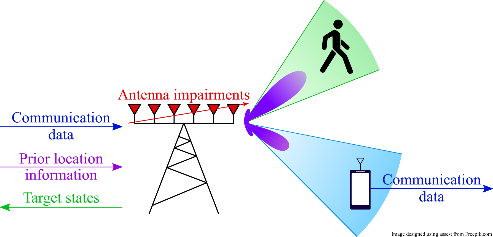

Download
Abstract
Integrated sensing and communications (ISAC) is envisioned as one of the key enablers of next-generation wireless systems, offering improved hardware, spectral, and energy efficiencies. In this paper, we consider an ISAC transceiver with an impaired uniform linear array that performs single-target detection and position estimation, and multiple-input single-output communications. A differentiable model-based learning approach is considered, which optimizes both the transmitter and the sensing receiver in an end-to-end manner. An unsupervised loss function that enables impairment compensation without the need for labeled data is proposed. Semi-supervised learning strategies are also proposed, which use a combination of small amounts of labeled data and unlabeled data. Our results show that semi-supervised learning can achieve similar performance to supervised learning with 98.8% less required labeled data.
Figure 1: Considered ISAC scenario.

Citation
@INPROCEEDINGS{10624785,
author={Mateos-Ramos, José Miguel and Chatelier, Baptiste and Häger, Christian and Keskin, Musa Furkan and Le Magoarou, Luc and Wymeersch, Henk},
booktitle={2024 IEEE International Conference on Machine Learning for Communication and Networking (ICMLCN)},
title={Semi-Supervised End-to-End Learning for Integrated Sensing and Communications},
year={2024},
volume={},
number={},
pages={132-138},
keywords={Wireless communication;Transmitters;Supervised learning;Symbols;Receivers;Radar;Semisupervised learning;Hardware impairments;integrated sensing and communication;joint radar and communication;model-based learning;semi-supervised learning},
doi={10.1109/ICMLCN59089.2024.10624785}
}